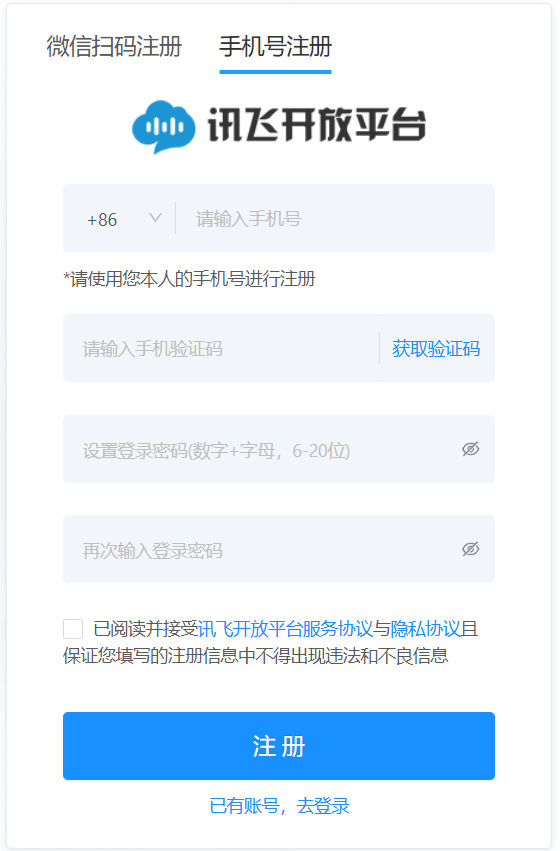
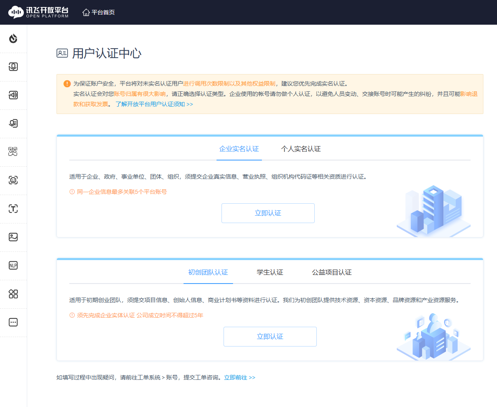

讯飞星火是4个免费模型中注册流程最复杂的（需要实名认证 + 创建应用）。如果觉得麻烦，可以先配置智谱和百度千帆（流程更简单），讯飞以后再补。
2注册账号
推荐用微信扫码登录（最快），也可以用手机号注册：
- 输入手机号，点击「获取验证码」
- 输入收到的验证码
- 设置登录密码（数字+字母，6-20位）
- 再次输入密码确认
- 勾选「已阅读并接受协议」
- 点击「注册」

3完成实名认证
这是最关键的一步，不完成实名认证无法正常调用 API。
- 注册登录后，进入「用户认证中心」
- 选择「个人实名认证」标签页（不要选企业认证）
- 点击「立即认证」
- 填写真实姓名和身份证号
- 按提示完成人脸识别（用手机扫码即可）
- 提交后等待审核（系统自动审核，通常几分钟内通过）

4创建应用
实名认证通过后，需要创建一个应用来绑定 API Key：
- 点击页面顶部「控制台」进入开发者后台
- 在左侧菜单找到「我的应用」，或直接访问 https://console.xfyun.cn/app/myapp
- 点击「创建新应用」
- 填写应用名称（如"零号工具"），应用分类选「其他」，功能描述随意填写
- 点击「提交」创建应用（等待后台审核，一般几分钟内通过）
5开通星火大模型服务
- 进入刚创建的应用详情页
- 找到「在线服务」或「接口管理」板块
- 找到 Spark Lite（星火大模型轻量版）服务
- 点击「开通服务」（免费开通，不需要付费）
- 开通后页面会显示三个值：APPID、API Key、APISecret
6复制 API Key
在应用详情页找到「API Key」（注意：不是 APPID，也不是 APISecret）。讯飞的 API Key 是一串 32 位的字母数字组合。点击复制按钮复制。
常见问题：如果创建应用后找不到 API Key，或者调用时报「未授权」，通常是因为：没有完成实名认证、没有开通星火大模型服务、复制错了值（把 APPID 当成了 API Key）。请回到第3-5步检查。
讯飞星火 Spark Lite 永久免费，2QPS 并发，中文理解能力在4个模型中最强，适合处理中文长文本、写作、总结等任务。